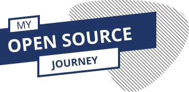

Discover the benefits of Open Source through concrete examples.
A publication every two weeks.

Learn more
Open Source is a great way to learn from others. All code is available, so everybody can review your work and you can read code written by many different developers.

Build your portfolio
On top of paying back to the community you also show to the world your interests,skills and motivation. It is also a good way to learn some good software engineering practice.

Gain team experience
Getting involved in the Open Source community means that you will build a professional network, meet great people, exchange ideas, spark plenty of quality discussions and even get a new job.